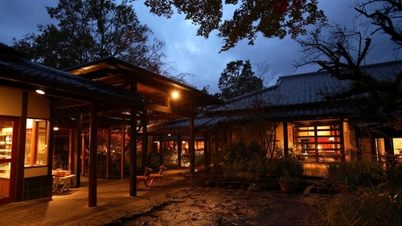타마노유由布院 玉の湯객실 실내탕비교함에 담기객실 조건과 참고요금모모(1층) 트윈 + 미하나다 + 사쿠라. 세 객실 각각 목제 실내 온천. 2/21~23 객실별 2박 잔여 1실, 2/22~24 라쿠텐 공실 없음. 욕조 실측 미공개.62,100엔부터 · 성인 2명 1실 1박 (2/21~23 중 요금이 표시된 밤 기준, 세금 포함)
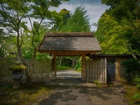가메노이 벳소亀の井別荘객실 실내탕비교함에 담기객실 조건과 참고요금일본료칸협회 등록. 2/22~24 본관 트윈 후모토·엔린·스이엔 각각 두 밤 잔여 1실. 세 방 모두 2층 계단. 어르신용 별채 햐쿠반칸도 양일 재고 표시, 실내탕·트윈 및 적은 단차. 날짜별 달력 확인, 합산 견적 미확인.108,900엔부터 · 성인 2명 1실 1박 (2/21~23 중 요금이 표시된 밤 기준, 세금 포함)
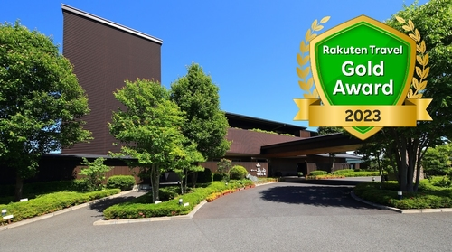하나요시由布院温泉 朝霧のみえる宿 ゆふいん花由객실 노천탕비교함에 담기객실 조건과 참고요금두 기준 일정 모두 B형 전용 노천탕 트윈 별채 3실 2박 견적 확인. 실내 욕조가 온천인지 객실별 구분 필요.35,160엔부터 · 성인 2명 1실 1박 (2/21~23 중 요금이 표시된 밤 기준, 세금 포함)
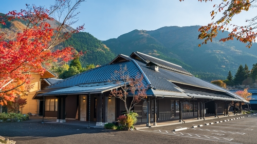바이엔 가든 리조트由布院 梅園 GARDEN RESORT객실 반노천비교함에 담기객실 조건과 참고요금2/21 출발 일정에 반노천 트윈 별채 1실 + 본관 트윈 2실 연박 확인. 본관에서 별채까지 계단. 2/20 출발은 별채 온천방 부족.30,184엔부터 · 성인 2명 1실 1박 (2/21~23 중 요금이 표시된 밤 기준, 세금 포함)
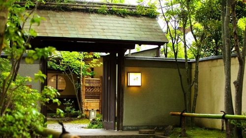료테이 타노쿠라由布院温泉 旅亭 田乃倉객실 실내탕비교함에 담기객실 조건과 참고요금2층 히노키 실내탕 트윈. 숙소가 다리를 뻗을 수 있는 욕조로 설명. 두 기준 일정 모두 해당 방은 남았으나 침대 객실 3실 조합 미확보.74,088엔부터 · 성인 2명 1실 1박 (2/21~23 중 요금이 표시된 밤 기준, 세금 포함)
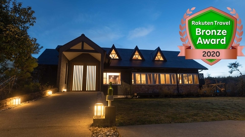마토소由布院 蔓蕩蒼 - Matousou -객실 실내탕비교함에 담기객실 조건과 참고요금쓰루·토우 트윈과 아오 다다미방. 쓰루 실내탕이 선호 기준. 세 번째 침대 객실 확보가 어려움.52,020엔부터 · 성인 2명 1실 1박 (날짜 미지정 최저, 세금 포함)
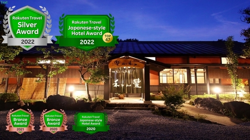와잔호由布院温泉 ゆふいん 旅庵 和山豊객실 실내탕비교함에 담기객실 조건과 참고요금목조 별채 12동. 전 객실 실내탕·노천탕. 202호 유비는 침대 2개. 객실별 욕실 사진 확인 가능.41,800엔부터 · 성인 2명 1실 1박 (2/21~23 중 요금이 표시된 밤 기준, 세금 포함)
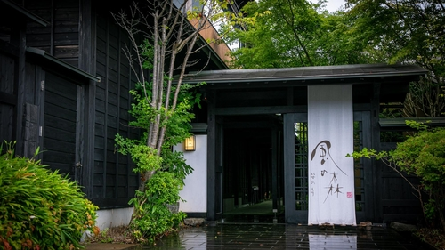카제노모리源泉掛け流しの離れ宿 由布院別邸 風の森객실 실내탕비교함에 담기객실 조건과 참고요금객실마다 원천 실내탕과 노천탕을 갖춘 별채. 예약 시 침대 수와 욕조 사진 대조.60,588엔부터 · 성인 2명 1실 1박 (2/21~23 중 요금이 표시된 밤 기준, 세금 포함)
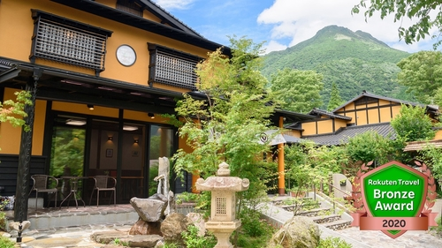카에데노쇼자由布院温泉 楓の小舎객실 실내탕비교함에 담기객실 조건과 참고요금객실 전용 실내탕·노천탕·암반욕. 무쿠는 복층. 동일 숙소에서 계단 적은 객실을 지정할 수 있는지 확인.73,656엔부터 · 성인 2명 1실 1박 (2/21~23 중 요금이 표시된 밤 기준, 세금 포함)
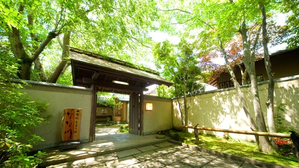나나카와由布院温泉 由布院 寛ぎの宿 なな川객실 실내탕비교함에 담기객실 조건과 참고요금50㎡ 복층 화양실, 객실 전용 실내탕과 노천탕. 2/21 잔여 4, 2/22와 2/23 각 2로 두 기준 일정 3실 연박 부족. 2/28과 3/1은 각 3·4실로 표시.78,018엔부터 · 성인 2명 1실 1박 (2/21~23 중 요금이 표시된 밤 기준, 세금 포함)
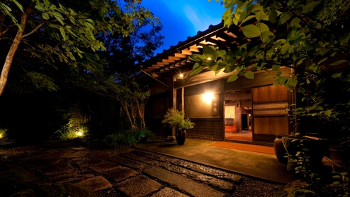겟토안由布院温泉 ゆふいん月燈庵객실별 확인비교함에 담기객실 조건과 참고요금어르신용 트윈과 객실 전용 실내탕의 조합은 추가 확인이 필요합니다.44,200엔부터 · 성인 2명 1실 1박 (2/21~23 중 요금이 표시된 밤 기준, 세금 포함)
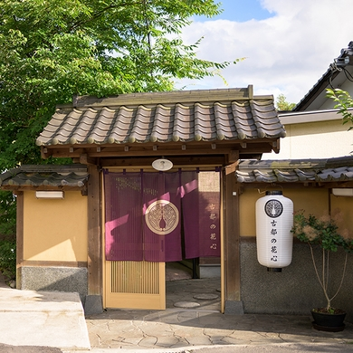고토노카신由布院温泉 旅館 古都の花心객실별 확인비교함에 담기객실 조건과 참고요금어르신용 트윈과 객실 전용 실내탕의 조합은 추가 확인이 필요합니다.19,134엔부터 · 성인 2명 1실 1박 (2/21~23 중 요금이 표시된 밤 기준, 세금 포함)
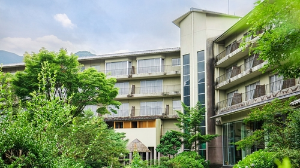고토부키 하나노쇼由布院温泉 由布院ことぶき 花の庄객실별 확인비교함에 담기객실 조건과 참고요금어르신용 트윈과 객실 전용 실내탕의 조합은 추가 확인이 필요합니다.24,354엔부터 · 성인 2명 1실 1박 (2027년 2월 중 최저, 세금 포함)
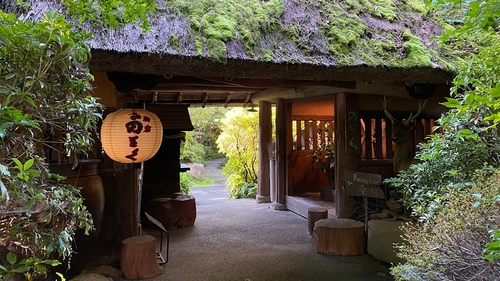노기쿠由布院温泉 湯布院旅館のぎく객실별 확인비교함에 담기객실 조건과 참고요금어르신용 트윈과 객실 전용 실내탕의 조합은 추가 확인이 필요합니다.26,000엔부터 · 성인 2명 1실 1박 (2/21~23 중 요금이 표시된 밤 기준, 세금 포함)
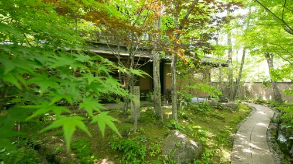니혼노아시타바由布院温泉 おやど 二本の葦束객실별 확인비교함에 담기객실 조건과 참고요금별채별 욕실과 관내 대절탕을 구분해 확인.86,508엔부터 · 성인 2명 1실 1박 (2/21~23 중 요금이 표시된 밤 기준, 세금 포함)
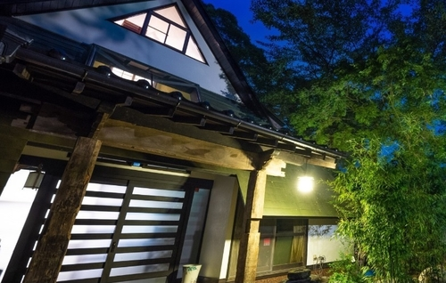다이쇼 유후노하나由布院温泉 大正 由布の花객실별 확인비교함에 담기객실 조건과 참고요금어르신용 트윈과 객실 전용 실내탕의 조합은 추가 확인이 필요합니다.18,700엔부터 · 성인 2명 1실 1박 (2/21~23 중 요금이 표시된 밤 기준, 세금 포함)
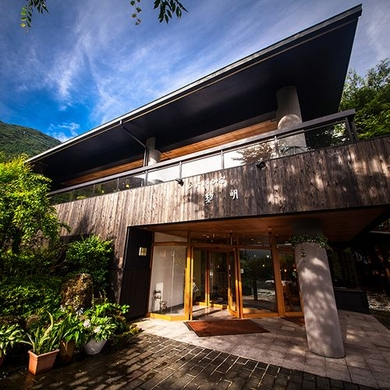레이메이湯布院温泉 ひすいの宿 黎明객실별 확인비교함에 담기객실 조건과 참고요금어르신용 트윈과 객실 전용 실내탕의 조합은 추가 확인이 필요합니다.29,510엔부터 · 성인 2명 1실 1박 (2/21~23 중 요금이 표시된 밤 기준, 세금 포함)
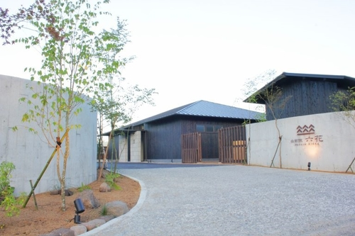릿카由布院 六花객실 반노천비교함에 담기객실 조건과 참고요금6동의 작은 별채 숙소. 전 객실 반노천, 4·5번은 트윈.75,240엔부터 · 성인 2명 1실 1박 (2/21~23 중 요금이 표시된 밤 기준, 세금 포함)
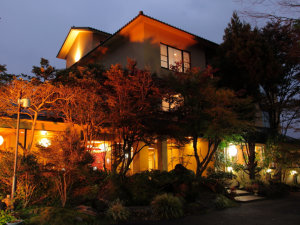메바에소由布院温泉 旅館 めばえ荘객실별 확인비교함에 담기객실 조건과 참고요금어르신용 트윈과 객실 전용 실내탕의 조합은 추가 확인이 필요합니다.47,241엔 · 성인 2명 1실 1박 (조석식 화실 판매 예시, 세금 포함)
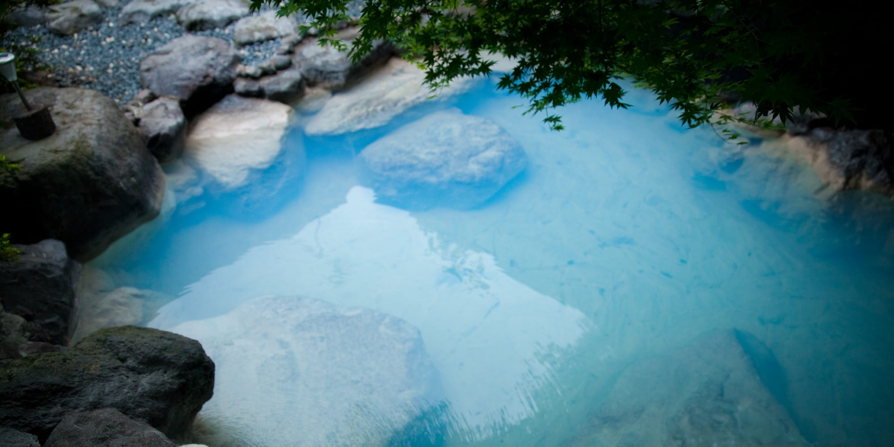모리노유 야스하由布院温泉 杜の湯 ゆふいん泰葉객실별 확인비교함에 담기객실 조건과 참고요금어르신용 트윈과 객실 전용 실내탕의 조합은 추가 확인이 필요합니다.81,400엔부터 · 성인 2명 1실 1박 (노천탕 별채 · 흡연 화실, 날짜 미지정)
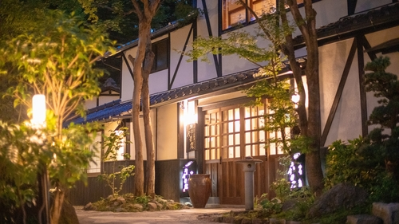벳소 곤자쿠안ゆふいん温泉 別荘 今昔庵객실별 확인비교함에 담기객실 조건과 참고요금어르신용 트윈과 객실 전용 실내탕의 조합은 추가 확인이 필요합니다.37,910엔부터 · 성인 2명 1실 1박 (2/21~23 중 요금이 표시된 밤 기준, 세금 포함)
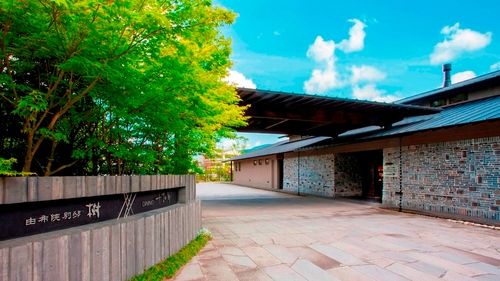벳테이 이츠키由布院別邸 樹객실별 확인비교함에 담기객실 조건과 참고요금별채마다 실내탕·반노천탕 구성이 다름. 공식 예약에서 두 기준 일정 1실 연박 공실 없음.81,660엔부터 · 성인 2명 1실 1박 (2/21~23 중 요금이 표시된 밤 기준, 세금 포함)
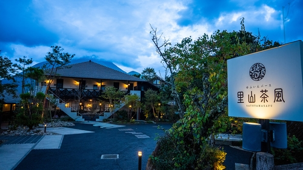사토야마 사후ゆふいんバース 里山茶風객실별 확인비교함에 담기객실 조건과 참고요금객실별로 실내탕·노천탕 구성이 다름.45,714엔부터 · 성인 2명 1실 1박 (2/21~23 중 요금이 표시된 밤 기준, 세금 포함)
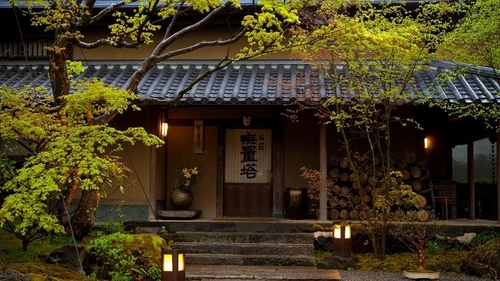산소 무라타由布院温泉 山荘 無量塔객실별 확인비교함에 담기객실 조건과 참고요금개성이 다른 독채들. 가족별 침대 수, 별채별 욕실과 본관까지 이동 동선 비교.154,440엔부터 · 성인 2명 1실 1박 (2/21~23 중 요금이 표시된 밤 기준, 세금 포함)
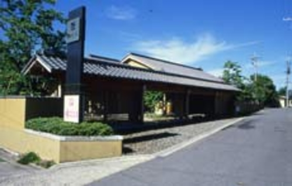산토칸由布院温泉 湯布院 山灯館객실별 확인비교함에 담기객실 조건과 참고요금어르신용 트윈과 객실 전용 실내탕의 조합은 추가 확인이 필요합니다.59,400엔부터 · 성인 2명 1실 1박 (2/21~23 중 요금이 표시된 밤 기준, 세금 포함)
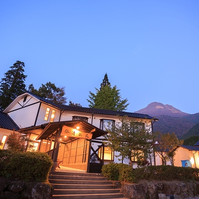세이코엔由布院温泉 ゆふいん宿 清孔苑객실별 확인비교함에 담기객실 조건과 참고요금어르신용 트윈과 객실 전용 실내탕의 조합은 추가 확인이 필요합니다.39,600엔부터 · 성인 2명 1실 1박 (2/21~23 중 요금이 표시된 밤 기준, 세금 포함)
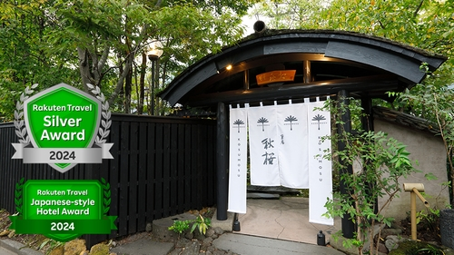소안 코스모스由布院温泉 草庵秋桜객실별 확인비교함에 담기객실 조건과 참고요금본관·별채, 개별 객실과 대절탕 확인.48,106엔부터 · 성인 2명 1실 1박 (2/21~23 중 요금이 표시된 밤 기준, 세금 포함)
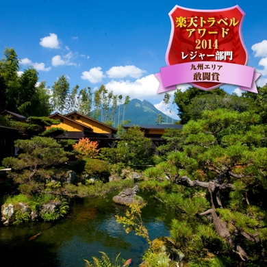야도야 오하시由布院温泉 由布の彩YADOYAおおはし객실별 확인비교함에 담기객실 조건과 참고요금어르신용 트윈과 객실 전용 실내탕의 조합은 추가 확인이 필요합니다.22,770엔부터 · 성인 2명 1실 1박 (2/21~23 중 요금이 표시된 밤 기준, 세금 포함)
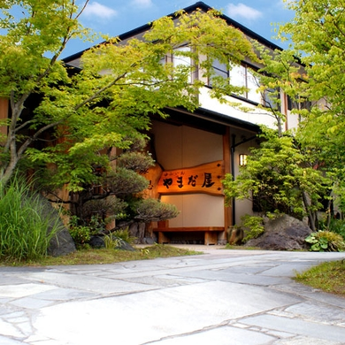야마다야由布院温泉 旅想 ゆふいん やまだ屋객실별 확인비교함에 담기객실 조건과 참고요금전통적인 다다미 객실 후보. 침대 수와 전용탕 확인 필요.59,400엔부터 · 성인 2명 1실 1박 (날짜 미지정 최저, 세금 포함)
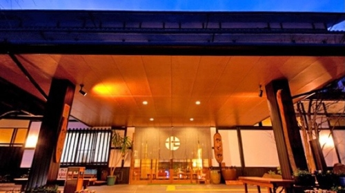야와라기노사토 야도야由布院温泉 湯布院 やわらぎの郷 やどや객실별 확인비교함에 담기객실 조건과 참고요금어르신용 트윈과 객실 전용 실내탕의 조합은 추가 확인이 필요합니다.37,008엔부터 · 성인 2명 1실 1박 (2/21~23 중 요금이 표시된 밤 기준, 세금 포함)
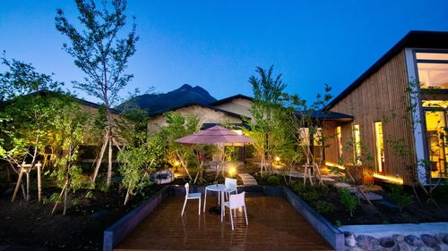오야도 덴 리큐由布院温泉 御宿 田 離宮객실 실내탕비교함에 담기객실 조건과 참고요금별채 실내탕·노천탕 후보.59,400엔부터 · 성인 2명 1실 1박 (2/21~23 중 요금이 표시된 밤 기준, 세금 포함)
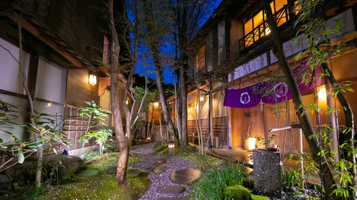오야도 이치젠由布院温泉 御宿 一禅객실별 확인비교함에 담기객실 조건과 참고요금어르신용 트윈과 객실 전용 실내탕의 조합은 추가 확인이 필요합니다.67,860엔부터 · 성인 2명 1실 1박 (2/21~23 중 요금이 표시된 밤 기준, 세금 포함)
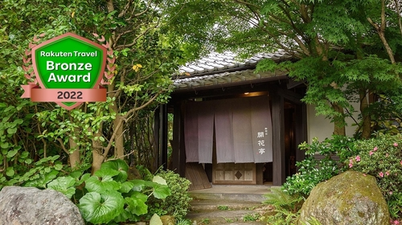오야도 카이카테이おやど 開花亭객실별 확인비교함에 담기객실 조건과 참고요금독립 별채. 침구와 실내탕이 객실별로 어떻게 조합되는지 확인 필요.50,160엔부터 · 성인 2명 1실 1박 (2/21~23 중 요금이 표시된 밤 기준, 세금 포함)
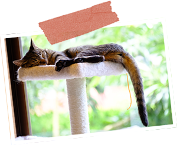와라네코노야도ゆふいん 笑ねこの宿객실탕 없음비교함에 담기객실 조건과 참고요금어르신용 트윈과 객실 전용 실내탕의 조합은 추가 확인이 필요합니다.23,000엔부터 · 성인 2명 1박 (평일, 식사·고양이 카페 제외, 세금 포함)
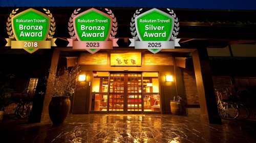유후노고 사이가쿠칸由布院温泉 柚富の郷 彩岳館객실별 확인비교함에 담기객실 조건과 참고요금어르신용 트윈과 객실 전용 실내탕의 조합은 추가 확인이 필요합니다.52,360엔부터 · 성인 2명 1실 1박 (2/21~23 중 요금이 표시된 밤 기준, 세금 포함)
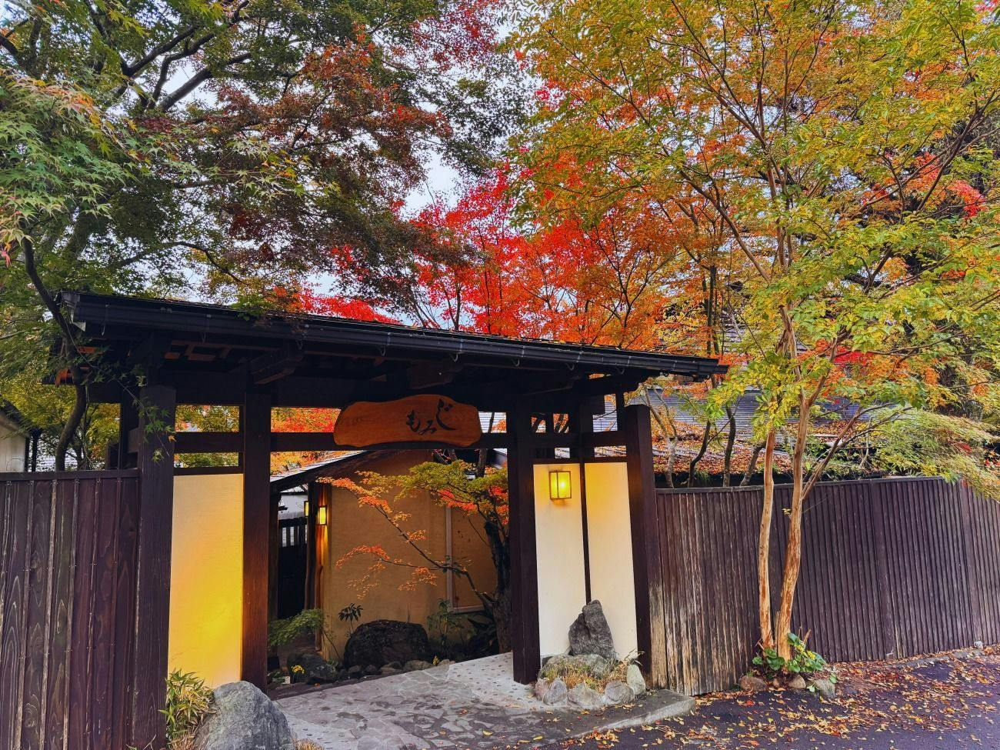유후모미지由布院 旅館ゆふもみじ객실별 확인비교함에 담기객실 조건과 참고요금어르신용 트윈과 객실 전용 실내탕의 조합은 추가 확인이 필요합니다.37,950엔부터 · 성인 2명 1실 1박 (2/21~23 중 요금이 표시된 밤 기준, 세금 포함)
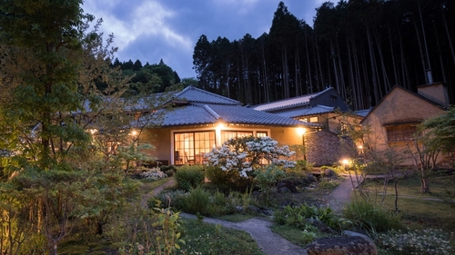잇코텐由布院温泉 湯富里の宿 一壷天객실별 확인비교함에 담기객실 조건과 참고요금별채별 사진과 구조가 달라 침실과 탕을 함께 확인.103,860엔부터 · 성인 2명 1실 1박 (2/21~23 중 요금이 표시된 밤 기준, 세금 포함)
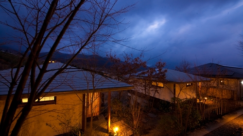츠바키由布院温泉 ゆふいん椿객실별 확인비교함에 담기객실 조건과 참고요금어르신용 트윈과 객실 전용 실내탕의 조합은 추가 확인이 필요합니다.25,218엔부터 · 성인 2명 1실 1박 (날짜 미지정 최저, 세금 포함)
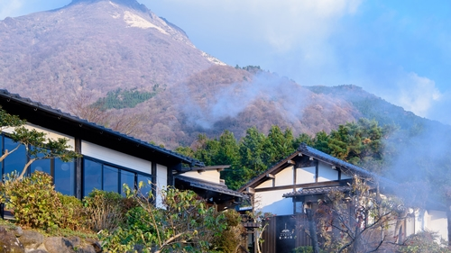츠카노마由布院温泉 束ノ間객실별 확인비교함에 담기객실 조건과 참고요금객실 실내탕 후보. 2명씩 쓰는 침대 객실 3실 조합 확인 필요.27,000엔부터 · 성인 2명 1실 1박 (2/21~23 중 요금이 표시된 밤 기준, 세금 포함)
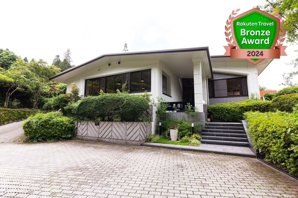키라라由布院温泉 由布岳一望の宿 美星〜きらら〜객실 반노천비교함에 담기객실 조건과 참고요금전용 반노천 중심. 넓은 실내탕 우선이면 후순위.46,332엔부터 · 성인 2명 1실 1박 (2/21~23 중 요금이 표시된 밤 기준, 세금 포함)
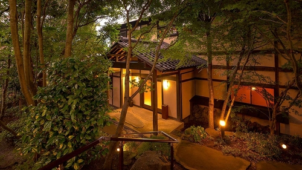토쇼안由布院温泉 東匠庵객실별 확인비교함에 담기객실 조건과 참고요금어르신용 트윈과 객실 전용 실내탕의 조합은 추가 확인이 필요합니다.58,340엔부터 · 성인 2명 1실 1박 (2/21~23 중 요금이 표시된 밤 기준, 세금 포함)
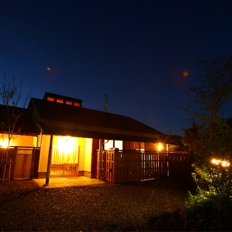폿포안由布院温泉 旅の宿 ぽっぽ庵객실별 확인비교함에 담기객실 조건과 참고요금별채 반노천 객실 후보.26,640엔부터 · 성인 2명 1실 1박 (날짜 미지정 최저, 세금 포함)
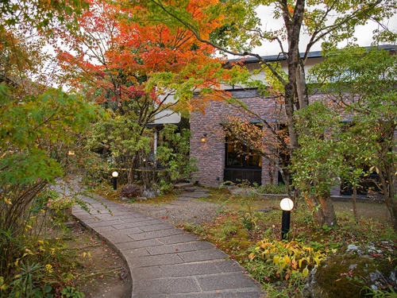하나노마이由布院温泉 山紫御泊処 はなの舞객실별 확인비교함에 담기객실 조건과 참고요금어르신용 트윈과 객실 전용 실내탕의 조합은 추가 확인이 필요합니다.23,760엔부터 · 성인 2명 1실 1박 (2/21~23 중 요금이 표시된 밤 기준, 세금 포함)
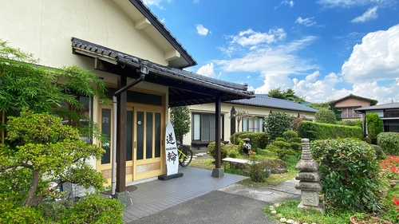하스와 인由布院温泉 蓮輪INN객실별 확인비교함에 담기객실 조건과 참고요금간소한 온천 숙소. 전통 고급 료칸을 우선하는 경우 후순위.21,600엔부터 · 성인 2명 1실 1박 (2/21~23 중 요금이 표시된 밤 기준, 세금 포함)
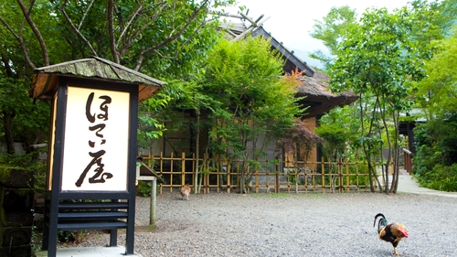호테이야由布院温泉 ほてい屋객실별 확인비교함에 담기객실 조건과 참고요금전통 별채 사진 확인 가능. 침대 객실과 욕실 사양은 방별 확인.59,142엔부터 · 성인 2명 1실 1박 (2/21~23 중 요금이 표시된 밤 기준, 세금 포함)
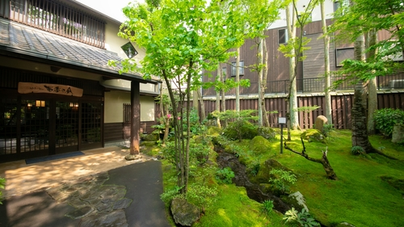후키노야由布院温泉 旅館 冨季の舎객실별 확인비교함에 담기객실 조건과 참고요금본관과 별채를 구분해 온천 실내탕·침대 유형 확인.31,320엔부터 · 성인 2명 1실 1박 (2/21~23 중 요금이 표시된 밤 기준, 세금 포함)
2월 20–23일료칸 21–23일 · 3실 연박 재고 확인항공·하카타·료칸 6인 합계10,528,855원객실별 잔여와 비용 내역유젠 · 실내 바위 온천, 세미더블 침대 2개256,000엔2명 · 2박 연속 잔여 1실 · 해당 상품 보기카린 · 침대가 있는 별채195,120엔2명 · 2박 연속 잔여 1실 · 해당 상품 보기야마모모 · 침대가 있는 별채195,120엔2명 · 2박 연속 잔여 1실 · 해당 상품 보기료칸 3실 · 2박 합계646,240엔호텔 닛코 후쿠오카 · 트윈 3실206,250엔2월 20–21일 · 시티사이드 트윈 · 1실 68,750엔 · 식사 없음 · 호텔 상품 보기인천 왕복 · 진에어 4명1,706,000원김해 왕복 · 제주항공 2명724,200원KB국민카드 실적 조건 요금
2월 21–24일료칸 22–24일 · 3실 연박 재고 확인항공·하카타·료칸 6인 합계9,787,880원객실별 잔여와 비용 내역유젠 · 실내 바위 온천, 세미더블 침대 2개256,000엔2명 · 2박 연속 잔여 1실 · 해당 상품 보기카린 · 침대가 있는 별채195,120엔2명 · 2박 연속 잔여 1실 · 해당 상품 보기야마모모 · 침대가 있는 별채195,120엔2명 · 2박 연속 잔여 1실 · 해당 상품 보기료칸 3실 · 2박 합계646,240엔호텔 닛코 후쿠오카 · 트윈 3실140,400엔2월 21–22일 · 가든사이드 트윈 · 1실 46,800엔 · 식사 없음 · 호텔 상품 보기인천 왕복 · 진에어 4명1,626,000원김해 왕복 · 제주항공 2명688,800원KB국민카드 실적 조건 요금